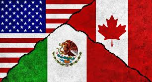
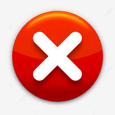
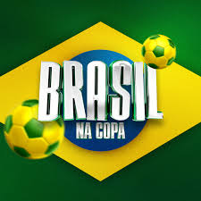
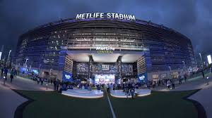
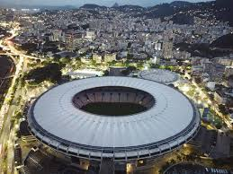
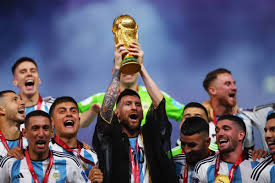
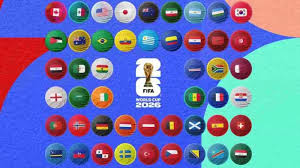
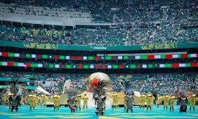
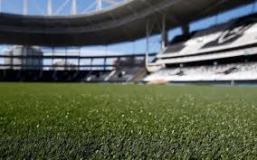
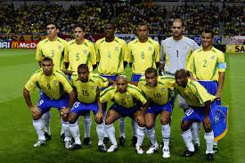

A Copa do Mundo de 2026 será realizada em apenas um país?

MITO! A Copa de 2026 será sediada por três países: Estados Unidos, Canadá e México. É a primeira vez que três países sediam o evento juntos, com 16 cidades-sede.

A Copa do Mundo de 2026 será realizada em apenas um país?

MITO! A Copa de 2026 será sediada por três países: Estados Unidos, Canadá e México. É a primeira vez que três países sediam o evento juntos, com 16 cidades-sede.

O Brasil vai participar da Copa do Mundo de 2026?
VERDADE! O Brasil, como uma das principais seleções do mundo, está classificado automaticamente para a Copa de 2026, que terá 48 seleções participantes. O país busca o hexacampeonato!

A Copa de 2026 terá mais jogos que as edições anteriores?
VERDADE! Sim! Com 48 seleções (em vez de 32), a Copa de 2026 terá 104 jogos, contra 64 das edições anteriores. Será a maior Copa da história!

O estádio Maracanã será usado na Copa de 2026?
MITO! O Maracanã fica no Brasil, e a Copa de 2026 será na América do Norte (EUA, Canadá e México). Portanto, não será utilizado. Os jogos serão em estádios como MetLife, Azteca e outros.

A Seleção Argentina é a atual campeã do mundo e vai defender o título em 2026?
VERDADE! Sim! A Argentina venceu a Copa de 2022 no Qatar e defenderá o título na edição de 2026, com Lionel Messi, possivelmente em sua última Copa do Mundo.

A Copa do Mundo de 2026 será a primeira com 48 seleções?
VERDADE! Sim! A partir de 2026, a FIFA ampliou o número de participantes de 32 para 48 seleções, em um novo formato de competição com mais emoção.

O jogo de abertura da Copa de 2026 será no México?
MITO! Ainda não foi definido onde será o jogo de abertura. As sedes incluem cidades como Nova York, Toronto, Cidade do México, Los Angeles, entre outras 16 cidades.

A Copa de 2026 terá jogos em campo de grama sintética?
MITO! A FIFA exige que os jogos da Copa sejam em grama natural. Portanto, todos os estádios terão grama natural para a competição, seguindo os padrões internacionais.

O Brasil já conquistou 5 títulos mundiais de futebol?
VERDADE! Sim! O Brasil é o maior campeão do mundo com 5 títulos (1958, 1962, 1970, 1994 e 2002). Em 2026, buscará o hexacampeonato inédito!
Todos os jogos da Copa de 2026 serão transmitidos apenas por TV paga?
MITO! Os jogos da Copa do Mundo são considerados de interesse público e devem ter transmissão em TV aberta em diversos países, incluindo o Brasil, garantindo que todos possam assistir.